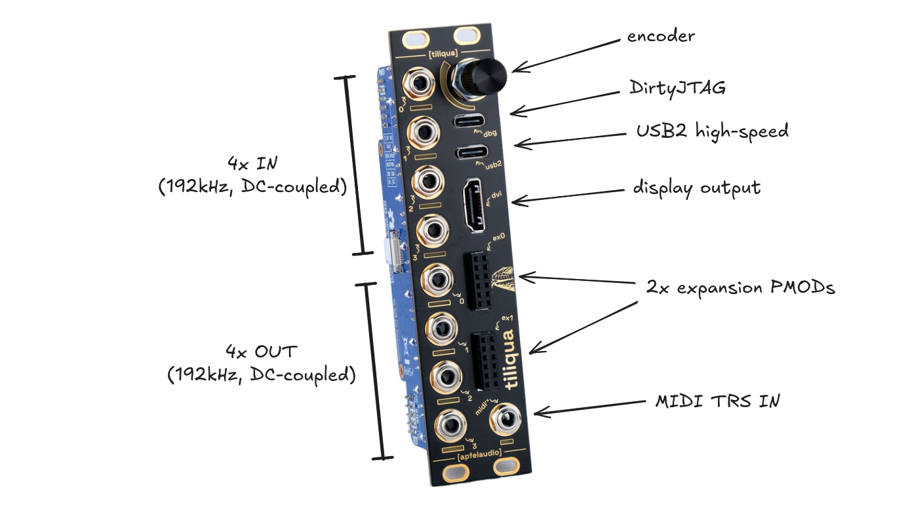

Tiliqua Project
Tiliqua Manual
Hardware overview
Hardware details
Prerequisites
Getting started
Tiliqua SoC designs
Bootloader
Top-level projects
Tiliqua DSP Library
(external) GitHub
(external) CrowdSupply
(external) apf.audio
Tiliqua Project
Tiliqua Manual
View page source
Tiliqua Manual
Warning
This manual is under construction and very incomplete!

Hardware overview
Front
Back
Power ingress
Debug USB port
Audio jacks
Hardware details
Audio Interface
Motherboard
Embedded FPGA SoM (
soldiercrab
)
Prerequisites
Getting started
Building example projects
Flashing example projects
Simulating DSP cores
Simulating SoC cores
Simulating vectorscope core
Using the ILA
Tiliqua SoC designs
Overview
PSRAM
Bootloader
Interface
Setup and implementation
Top-level projects
dsp
xbeam
polysyn
selftest
macro_osc
usb_audio
usb_host
vectorscope_no_soc
bootloader
Tiliqua DSP Library
Overview
Delay Lines
Filters
Oscillators
Effects
VCAs
Mixing
Resampling
One-shot
Stream utilities
Other utilities
{kind=link}